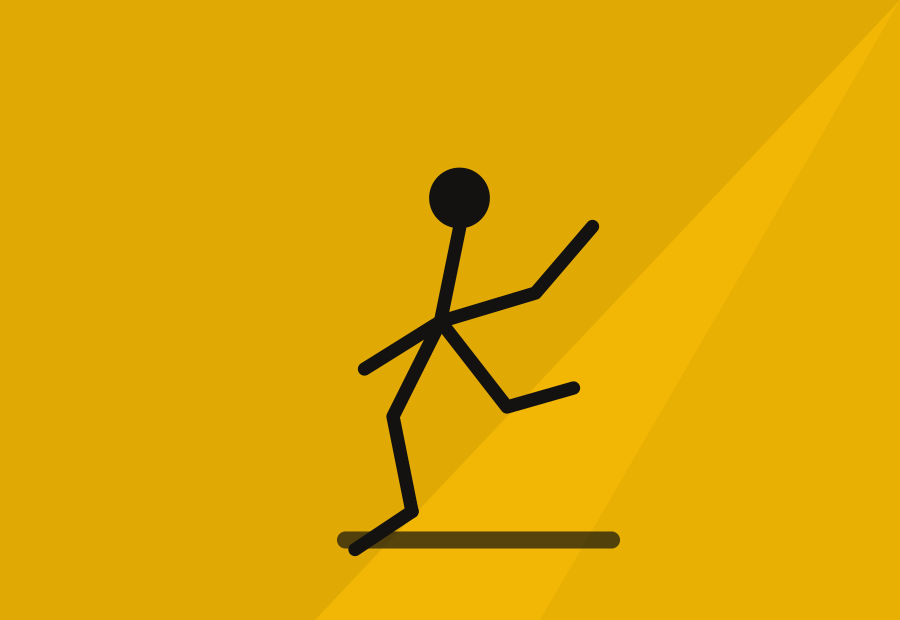
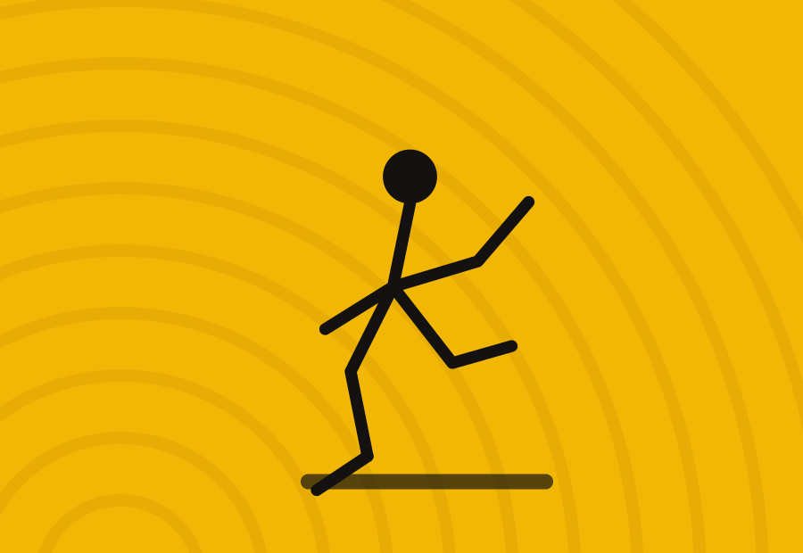
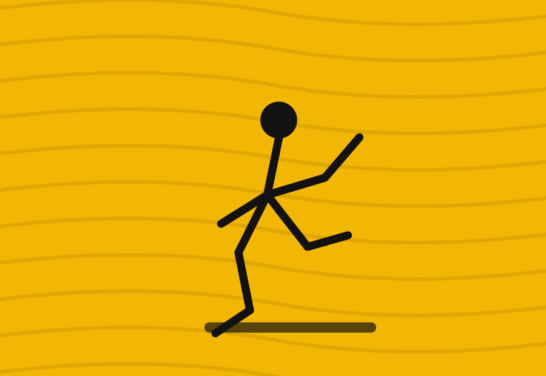

Pattinaggio
Pattinaggio artistico su ruote: dal gioca-pattino ai campionati regionali UISP, in pista a Prati di Vezzano Ligure.
La disciplina
Dai primi passi in pista alle coreografie di gara
La sezione pattinaggio è una delle più longeve della Polisportiva Prati Fornola: si parte con il gioca pattino, un percorso ludico-motorio per i più piccoli, per arrivare al pattinaggio artistico vero e proprio, con programmi di libero, solo dance e sincronizzato.
Le nostre atlete e i nostri atleti partecipano ogni stagione ai campionati regionali UISP, e la sede di Prati ha più volte ospitato manifestazioni regionali di solo dance, portando in paese pattinatori da tutta la Liguria.
Cosa si impara
Equilibrio, coordinazione, elementi tecnici a corpo libero, figure e coreografie musicali. Il percorso è graduale, con gruppi divisi per livello tecnico oltre che per età.
Materiale necessario
Per la prova gratuita mettiamo a disposizione un paio di pattini in prestito, in base alla disponibilità. Per chi prosegue è consigliato l'acquisto di pattini artistici e protezioni per polsi, ginocchia e gomiti nei primi mesi.
A colpo d'occhio
- Età: dai 4 anni, nessun limite massimo
- Livello: gioca pattino, base, agonisti
- Sede: Sede di Prati, Vezzano Ligure
- Discipline gara: libero, solo dance, sincronizzato
Orari
Corsi divisi per età e livello
La pista è aperta tre giorni a settimana. La prima lezione di prova è gratuita, pattini in prestito su richiesta.
| Categoria / età | Martedì | Giovedì | Sabato |
|---|---|---|---|
| Gioca pattino · 4–6 anni | 17:00–17:50Mar · propedeutica | — | 10:00–10:50Sab · propedeutica |
| Base · 7–10 anni | 17:50–18:50Mar · tecnica base | 17:50–18:50Gio · tecnica base | — |
| Libero / Solo dance · 11–14 anni | 18:50–20:00Mar · coreografia | 18:50–20:00Gio · coreografia | 11:00–12:30Sab · prove libere |
| Agonisti UISP · 15+ | — | 20:00–21:30Gio · perfezionamento | 12:30–14:00Sab · perfezionamento |
Lo staff
Allenatori - Maestro
Il team tecnico che segue i corsi e le atlete e gli atleti agonisti.
In evidenza
La pista in immagini
Alcuni scatti che raccontano lo spirito del gruppo, oltre alla fotogallery qui sotto.


Fotogallery
Un anno in pista
Allenamenti, coreografie e gare del gruppo pattinaggio.
Gare e risultati
Gare e risultati Pattinaggio
I risultati delle nostre pattinatrici e dei nostri pattinatori nei circuiti UISP.
Calendario eventi
Gare e appuntamenti Pattinaggio
Sali in pista: prima prova gratis
Pattini in prestito disponibili su richiesta per la lezione di prova.